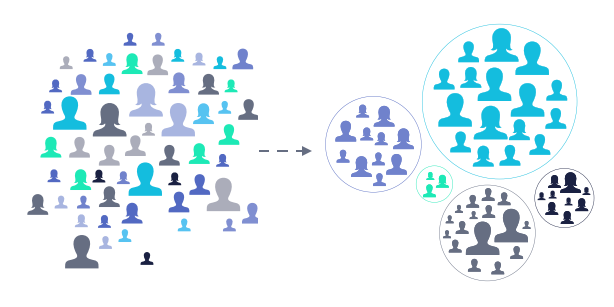

Featured Projects

Customer Segmentation Using RFM Analysis
Segmented customers using RFM metrics and K-Means clustering to uncover behavioral groups like VIPs and at-risk users, enabling data-driven marketing and retention strategies.

Kenyan Housing Market Analysis
Performed Exploratory Data Analysis (EDA) on the Kenyan housing market to evaluate how property size and location influence housing prices.
Petroleum Price vs Inflation
Analyzed the impact of petroleum price fluctuations on inflation in Nairobi using CPI data, focusing on kerosene, gasoline, and diesel.